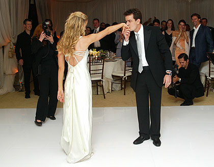
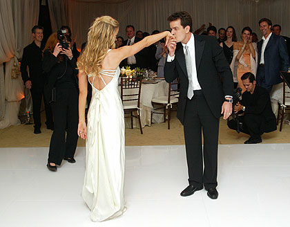

Rock in Rio
Casamento de Denise Richards e Charlie Sheen em 2002 repleto de alegrias e paixão. O antigo ator Charlie e a também atriz Denise nos contrataram para a gestão desse grande momento na vida de ambos. Charlie Sheen (nome artístico de Carlos Irwin Estevez; Nova Iorque, 3 de setembro de 1965) é um ator, dublador, roteirista, comediante e produtor de cinema e televisão estadunidense, amplamente conhecido por interpretar Charlie Harper em Dois Homens e Meio e, no cinema, por estrelar os premiados Platoon e Wall Street. Em 2002 (Mesmo de seu casamento), Sheen conquistou um Prêmio Globo de Ouro como Melhor Ator em Série de Comédia ou Musical, por sua atuação em Spin City. Esse grande icone da televisão americana nos convidou a está preparando seu casamento com Denise Richards.

Galeria de Imagens
 
